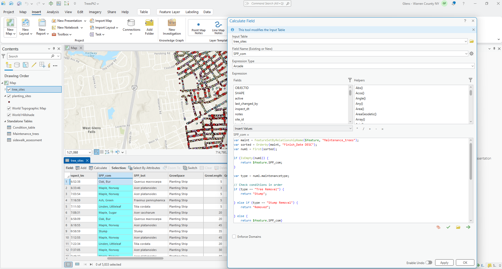

Overview
The city collected tree condition and location data from a third party service in 2022. Data was static and needed to be updated to support planning initiatives for both public and internal stakeholders and retain the city's status as a climate smart community.
Task
Create a process in Field Maps Mobile that tracks tree plantings, removals, and inspections to keep data current and accessible. This system needs to be easy to understand for non-GIS users, built into a dashboard that is shared both publicly and privately, and autonomous.
I downloaded the data, cleaned it and split layers between planting sites and tree sites. I created three separate tables for inspection records, sidewalk assessments, and tree maintenance then connected them to the tree layer with one to many relationship classes. From here I configured forms in Field Maps Designer for each table to control data added, allowing workers to add updates from field work. At this point I still had to manually update tree edits using a field calculation script that I wrote in Arcade. In order for the process to be fully autonomous, I needed to rewrite the code in a notebook that could be scheduled.

from arcgis.gis import GIS
# Connect once
gis = GIS("home")
map_lyrs = gis.content.get("********************796337")
tree_lyr = map_lyrs.layers[1]
maint_table = map_lyrs.tables[2]
# STEP 1: Link new maintenance records
print("Step 1: Linking new maintenance records...")
trees = tree_lyr.query(where="1=1", out_fields="OBJECTID,GlobalID")
updates = []
for tree in trees.features:
try:
related = tree_lyr.query_related_records(
object_ids=str(tree.attributes['OBJECTID']),
relationship_id=2,
out_fields="OBJECTID,ParentGlobalID"
)
groups = related.get('relatedRecordGroups', [])
if groups and groups[0].get('relatedRecords'):
for maint in groups[0]['relatedRecords']:
if not maint['attributes'].get('ParentGlobalID'):
updates.append({
"attributes": {
"OBJECTID": maint['attributes']['OBJECTID'],
"ParentGlobalID": tree.attributes['GlobalID']
}
})
except:
pass
if updates:
result = maint_table.edit_features(updates=updates)
success = sum(r['success'] for r in result['updateResults'])
print(f" ✓ Linked {success} new maintenance records")
else:
print(" No new records to link")
# STEP 2: Update tree statuses
print("\nStep 2: Updating tree statuses...")
trees = tree_lyr.query(where="1=1", out_fields="OBJECTID,GlobalID,SPP_com")
maint_records = maint_table.query(where="1=1", out_fields="ParentGlobalID,Maintenancetype,Finish_Date")
# Build lookup
maint_by_tree = {}
for record in maint_records.features:
parent_id = record.attributes.get('ParentGlobalID')
if parent_id:
if parent_id not in maint_by_tree:
maint_by_tree[parent_id] = []
maint_by_tree[parent_id].append(record.attributes)
# Process updates
updates = []
for tree in trees.features:
tree_globalid = tree.attributes['GlobalID']
current = tree.attributes['SPP_com']
if tree_globalid in maint_by_tree:
latest = max(maint_by_tree[tree_globalid], key=lambda r: r.get('Finish_Date') or 0)
mtype = latest.get('Maintenancetype')
if mtype == "Tree Removal":
new = "Stump"
elif mtype == "Stump Removal":
new = "Removed"
else:
new = current
if new != current:
updates.append({"attributes": {"OBJECTID": tree.attributes['OBJECTID'], "SPP_com": new}})
if updates:
result = tree_lyr.edit_features(updates=updates)
success = sum(r['success'] for r in result['updateResults'])
print(f" ✓ Updated {success} trees")
else:
print(" No updates needed")
print("\n✓ Complete!")from arcgis.gis import GIS
from datetime import datetime
import csv
# Connect
gis = GIS("home")
map_lyrs = gis.content.get("********************796337")
planting_lyr = map_lyrs.layers[0]
tree_lyr = map_lyrs.layers[1]
print("Finding removed trees...")
# Find all trees marked as "Removed"
removed_trees = tree_lyr.query(
where="SPP_com = 'Removed'",
out_fields="*",
return_geometry=True
)
print(f"Found {len(removed_trees.features)} removed trees")
if len(removed_trees.features) == 0:
print("No trees to process!")
else:
# STEP 1: Export to spreadsheet for records
print("\nStep 1: Exporting removed trees to spreadsheet...")
timestamp = datetime.now().strftime("%Y%m%d_%H%M%S")
csv_filename = f"/arcgis/home/RemovedTrees.csv"
# Get field names
field_names = [f['name'] for f in tree_lyr.properties['fields']]
field_names.extend(['removal_date', 'X', 'Y'])
# Write CSV
with open(csv_filename, 'w', newline='') as csvfile:
writer = csv.DictWriter(csvfile, fieldnames=field_names)
writer.writeheader()
for tree in removed_trees.features:
row = tree.attributes.copy()
row['removal_date'] = datetime.now().strftime("%Y-%m-%d")
row['X'] = tree.geometry['x']
row['Y'] = tree.geometry['y']
writer.writerow(row)
print(f" ✓ Saved to {csv_filename}")
# STEP 2: Create planting sites
print("\nStep 2: Creating planting sites...")
new_planting_sites = []
for tree in removed_trees.features:
new_site = {
"attributes": {
"SPP_com": "Vacant site medium",
"Street": tree.attributes.get('Street'),
"Address": tree.attributes.get('Address')
},
"geometry": tree.geometry
}
new_planting_sites.append(new_site)
result = planting_lyr.edit_features(adds=new_planting_sites)
added = sum(r['success'] for r in result['addResults'])
print(f" ✓ Created {added} planting sites")
# STEP 3: Delete removed trees
print("\nStep 3: Deleting removed trees...")
tree_oids = [tree.attributes['OBJECTID'] for tree in removed_trees.features]
oid_string = ",".join(str(oid) for oid in tree_oids)
result = tree_lyr.edit_features(deletes=oid_string)
deleted = sum(r['success'] for r in result['deleteResults'])
print(f" ✓ Deleted {deleted} trees")
print(f"\n✓ Complete! Processed {deleted} removed trees")
print(f" - Exported to: {csv_filename}")
print(f" - Created {added} planting sites")
print(f" - Deleted {deleted} trees")Using ArcGIS API for Python I developed two scripts to update the symbology of trees based on maintenance records submitted by DPW. If a tree is removed, symbology changes to a stump, if a stump is removed, a new planting site is added.
Result
Two new maps created for editing and viewing. New interactive, public-facing dashboard shared on the city's hub site. New workflow that maintains quality data and provides stakeholders with current information to support planning initiatives.